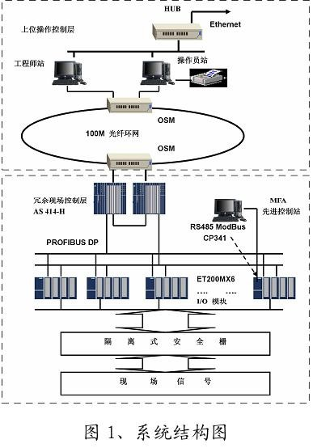
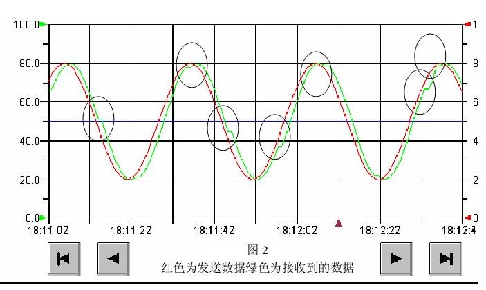
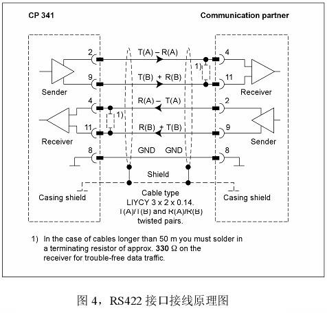
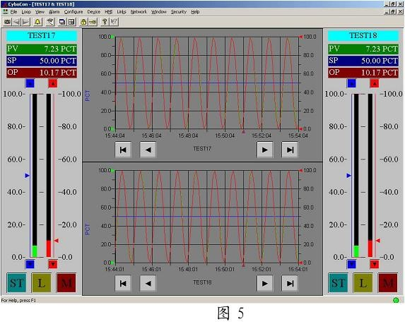

西门子串口通讯模块CP341装载ModBus从站协议全双工通讯的实现
原创作者：王永建(blog@wangyongjian.cn)
原文引用地址：blog.wangyongjian.cn
[摘 要] 通过试验实现了西门子串口通讯模块CP341装载ModBus从站协议时的全双工通讯 [关键词]CP341 Modbus 全双工通讯
项目概述
安钢1#煤气加压站GMC煤气混合控制系统采用西门子公司S7-400H系列过程控制系统及安装有CyboSoft系列控制软件CyboCon的MFA先进控制站构成。如图-1所示  MFA先进控制站通过CP341与S7-400H系统实现数据通讯，采用的是ModBus协议，RTU格式，CP341装载ModBus从站协议，作为从站与MFA先进控制站通讯。在MFA先进控制站侧安装有研华的ADMA4520模块，使其具有RS485和RS422通信接口。
CyboCon是由通控集团博软公司（CyboSoft，General Cybernation Group Inc.）开发并拥有的专利技。基于MFA核心控制技术是世界上首套“即插即用”式单变量和多变量控制软件，可自适应控制简单或复杂的工业过程。它以无模型自适应理论为基础，无需进行控制器设计、没有辨识过程，也不需知道过程的定量知识，就可将控制器投入运行。即使过程的动态特性有很大变化，也不需重新整定控制器参数。
遇到的问题
主要问题出现在MFA先进控制站与西门子系统通讯方面。系统最初的设计是MFA先进控制站与CP341之间通过RS485的形式连接。问题就出在此：MFA先进控制站的Modbus驱动是在RS232的接口基础上开发的，通讯方式为全双工。而通过RS485与CP341连接时，只能实现半双工通讯。于是在现场就出现了一些问题：进行小的数据量（寄存器读写总数不超过10个）时，通讯基本上还是正常可以进行的，但是不同程度上会出现数据丢失的现象（图2）。如再增加通讯数据量，数据丢失将更加明显，甚至出现通讯中断。

从西门子的相关资料上查到的结果是可以通过改用RS422接口来实现全双工通讯。而且在Step7的组态环境中的设计选项也说明了，CP341 是可以工作在全双工模式下的（图3）。

由于 PLC控制器同时还担负着现场三台加压机的运行监视和故障连锁保护，而且已经在运行了。从安全角度考虑，于是先和西门子技术支持确认了一下方案的可实施性，得到的答复却是不行，理由是Modbus协议不支持全双工通讯所以用RS-422来实现全双工通讯是不可行的。这个解释很显然说不过去。这就与西门子提供的资料有矛盾了。
西门子提供的另一种方案就是再额外增加一块CP341模块。一收一发。这个方案理论上确实可以解决问题。这样不但要增加成本，而且CP341国内没有库存，订货周期长达六周以上。此方案只能作为下下策备选。
解决的方法
矛盾之下只能实测，最佳方案只能是尝试采用RS422的通讯方式。在做好充分准备后，在软件中将CP341的接口设置为RS422接口方式，编译后下载。将电气连接按图4所示，改为RS422连接方式。然后在MFA工作站用Modscan软件扫描测试，测试显示，得不到测试数据返回值。  注：图4中的接线图通过实际证明是错误的。正确接线方式详见下面的接线说明。 在反复进行了接线检查，多次修改配置软件后均无法通讯成功。后通过观察4520的指示灯发现，通过由4520有数据发出，但是CP341没有任何反应。在对软件和硬件连线进行了数次检查后，仍是无法通讯成功后。最后怀疑是还是接线有问题，将ADMA4520与CP341之间的接线进行了试探性顺序调整，在将ADMA4520与CP341直接的接线顺序调整为TX+--TB，TX---TA，RX+ --RB，RX- --RA时，发现4520的红灯开始闪烁，通过测试观察，通讯成功。而且效果很好。如图5：  注：将sine信号送MFA或PID控制器的OTV端，经RS-422通讯送SIEMENS CP341，PLC将接收到的数据送回，连接控制器的PV端。当通讯实时性差的时候CyboCon实时趋势的PV与OP无法重合，滞后于OP值。而利用RS-422全双工通讯则实时性很好。
结论
RS-422全双工通讯方式能够满足安钢项目的通讯需要，无需再另行购买SIEMENS CP341产品。